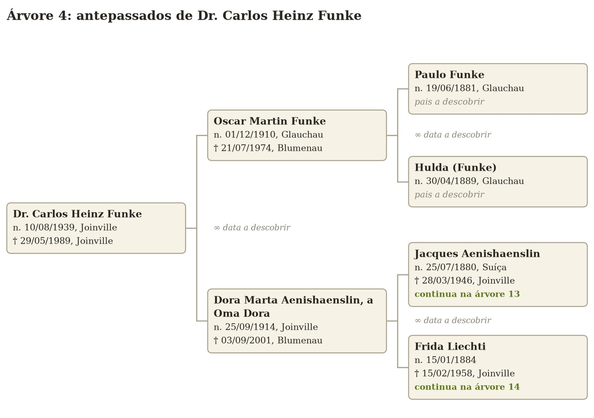
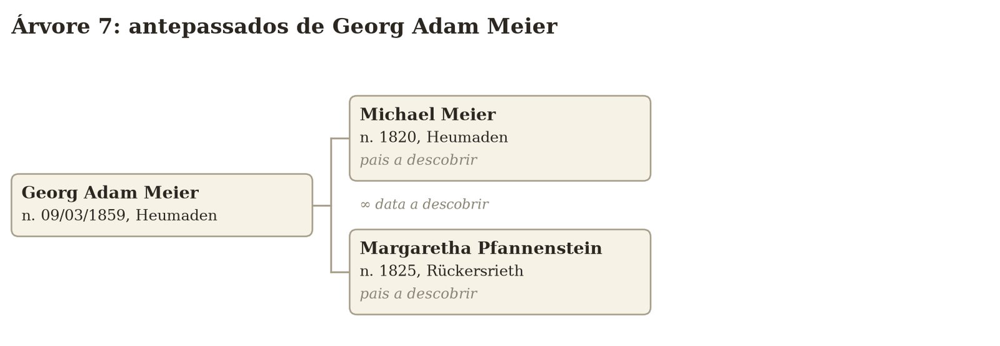
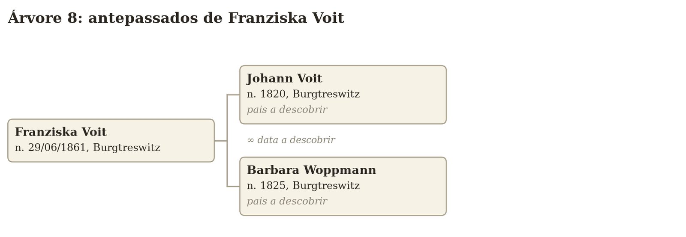
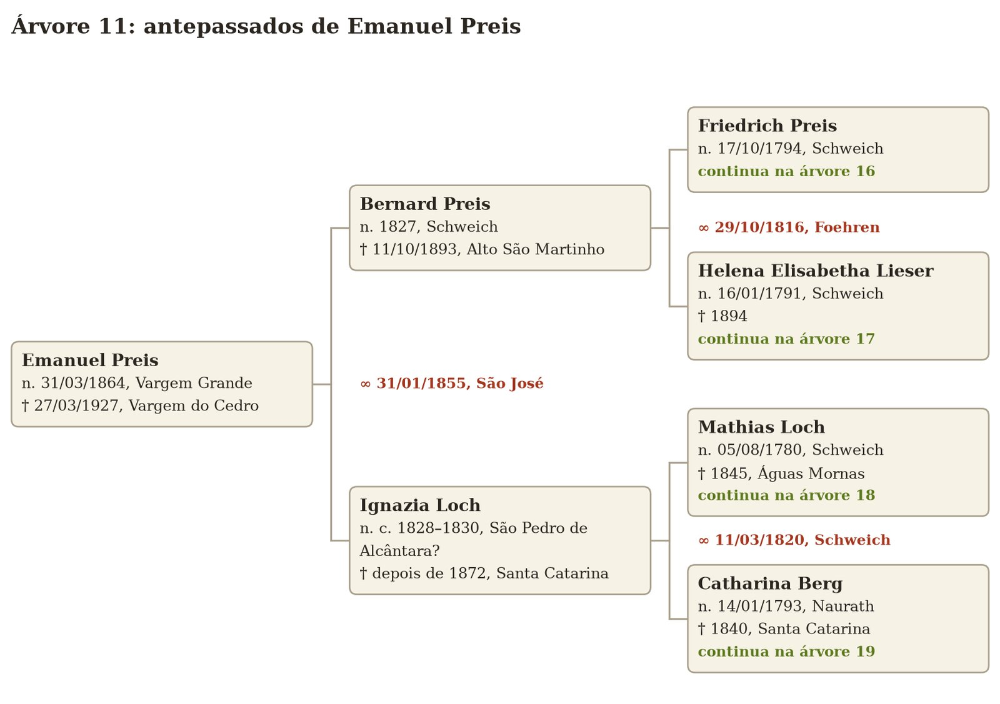
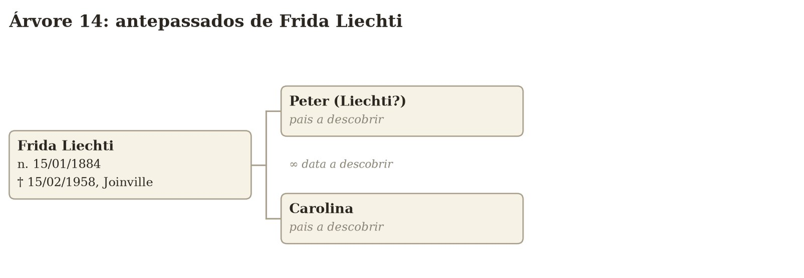
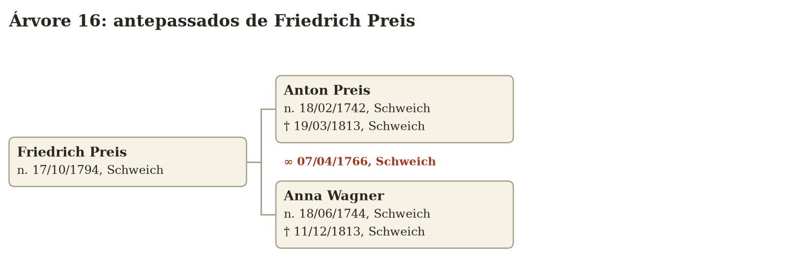
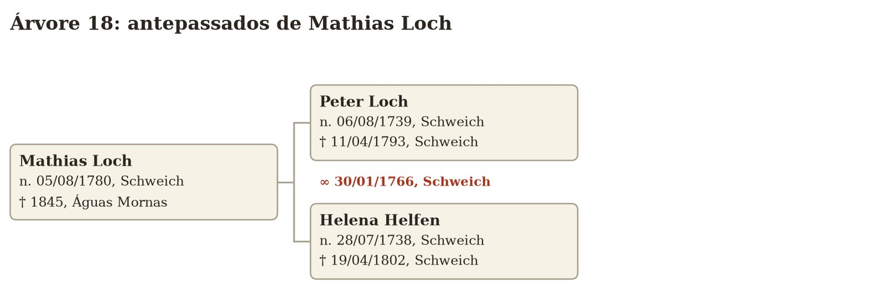
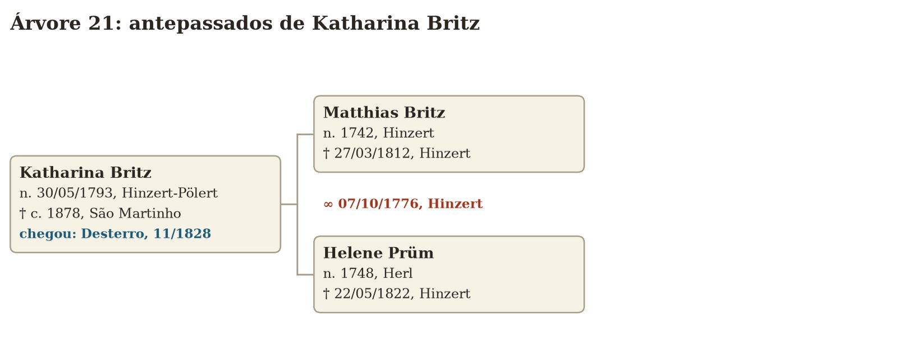
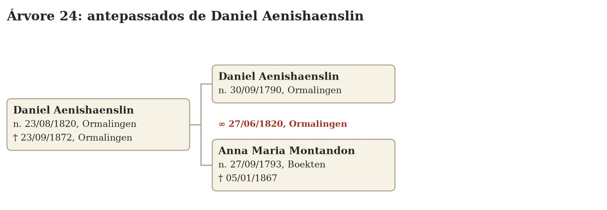
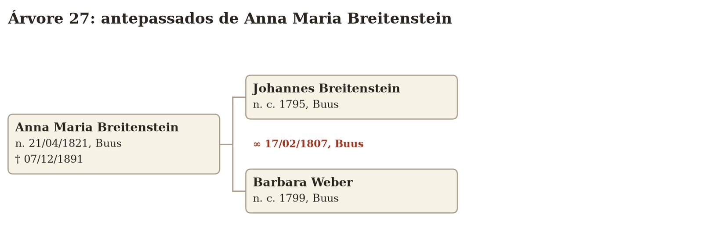

Estas são as árvores de vocês até a sétima geração, até onde sei hoje, com as datas de nascimento, de morte, de casamento e de chegada ao Brasil. Comecem pela árvore 1 e sigam os avisos “continua na árvore”. Quem não aparece é porque ainda não conheço; nas caixas, “pais a descobrir” e “data a descobrir” são as perguntas que deixo para vocês. Boa parte das datas mais antigas vem do FamilySearch, uma árvore colaborativa, e ainda precisa ser conferida nos livros. Pessoas vivas aparecem só com o ano, ou sem data.
Matheus e Lucas.Antepassados de Baldoíno Haas.Antepassados de Adelina Doerner.

Antepassados de Dr. Carlos Heinz Funke.Antepassados de Ilusca Leocádia Hoeveler.Antepassados de Josef Haas.

Antepassados de Georg Adam Meier.

Antepassados de Franziska Voit.Antepassados de Carlos Dörner.Antepassados de Anna Eller.

Antepassados de Emanuel Preis.Antepassados de Helena Michels.Antepassados de Jacques Aenishaenslin.

Antepassados de Frida Liechti.Antepassados de Francisco Jacob Lohmann.

Antepassados de Friedrich Preis.Antepassados de Helena Elisabetha Lieser.

Antepassados de Mathias Loch.Antepassados de Catharina Berg.Antepassados de Mathias Michels.

Antepassados de Katharina Britz.Antepassados de Nikolaus Arns.Antepassados de Anna Margaretha Simonis.

Antepassados de Daniel Aenishaenslin.Antepassados de Barbara Spitteler.Antepassados de Johannes Bussinger.

Antepassados de Anna Maria Breitenstein.Antepassados de Georg Karl Maximilian Lohmann.Antepassados de Bárbara Wingert.Antepassados de Julius Georg Schnack.Antepassados de Susanna Charlotte Köhnlein.